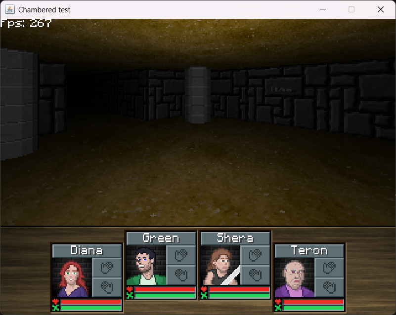

Home
Games
Projects
Not logged in. [
Log in
]
Projects
Here are some of the projects I have created, listed in released order.
ReChambered

A unzipped mirror of the original Legend Of the Chambered I. Includes decompiled classes aswell as the Manifest.txt
See Project